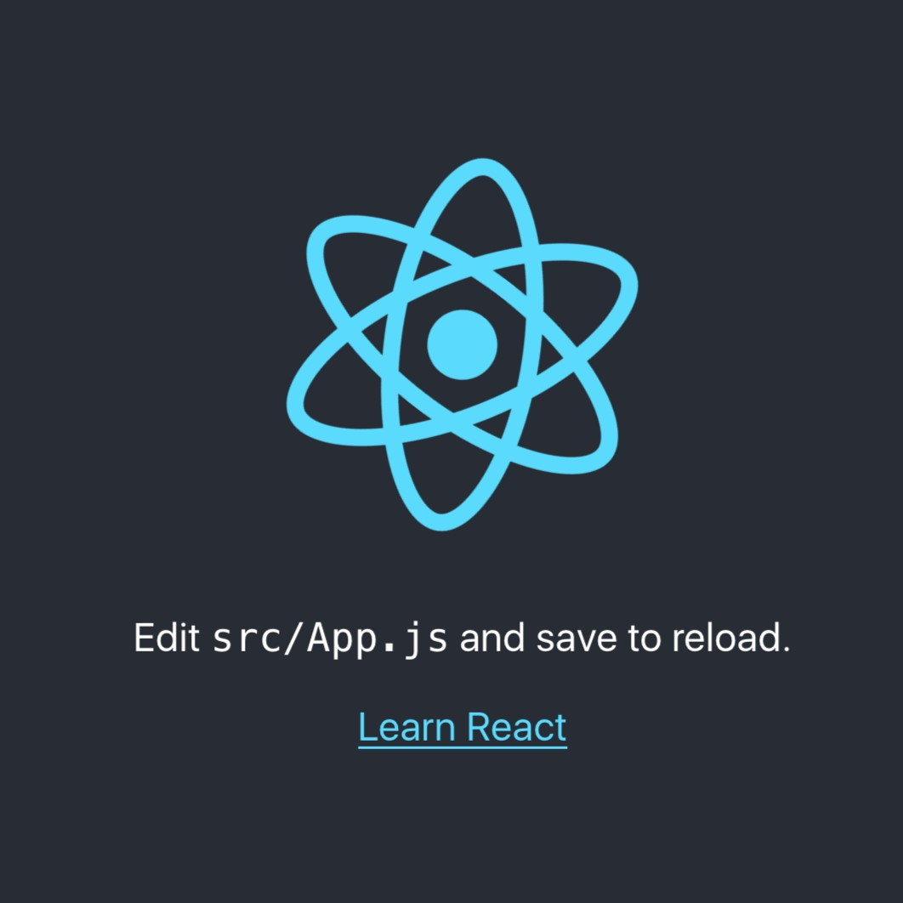
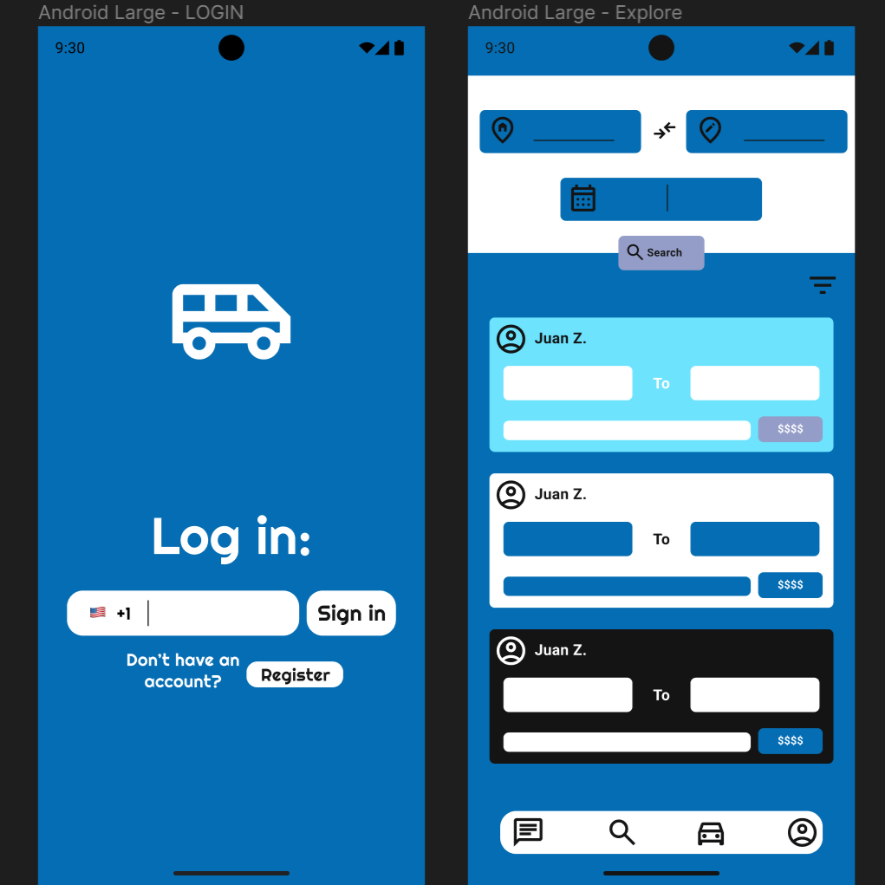

About
Hi! I'm Juan Zurita, a Computer Science student at BYU-Idaho. I was born in Bolivia 🇧🇴, but when I was 4 years old, my family moved to Spain 🇪🇸, where I grew up and have lived most of my life.
I'm passionate about technology and AI, and I love creating anything that can have a real impact in the world. I enjoy learning a broad range of topics and I'm continuously looking for new challenges. I built this static vanilla JavaScript website to host my resume and showcase my design abilities. I hope you enjoy it!
Experience
Online Teacher Assistant for WDD230
Brigham Young University - Idaho
April 2023 - Present
Being a TA has helped me acquire valuable skills which I can use on any project I work on. Troubleshooting is something really important as much as providing support to others. These abilities help me write clean code and think about the accessibility for my projects.
- Provided guidance and support to 20+ students in web development using HTML, CSS, and JavaScript.
- Guided students to achieve proficiency in creating responsive, well-designed, and interactive web pages using HTML, CSS, and JavaScript.
- Assisted students in understanding and implementing web development concepts, troubleshoot coding issues, and contribute to a collaborative learning environment.
International Services Processor
Brigham Young University - Idaho
November 2022 - August 2023
As an international student in the United States, I know first-hand how difficult it can be for us to adapt to a different culture and learn the most important regulations. Working in the International Services office at BYU-Idaho, I assisted students with migratory issues or concerns. I also helped to process I-20s for incoming students.
- Efficiently handled walk-ins, phone calls, and emails, providing information and directing students to appropriate departments.
- Assisted students with administrative processes and immigration-related questions, offering guidance and facilitating necessary paperwork.
- Maintained organized records, schedule appointments, and perform general administrative tasks with attention to detail and multitasking abilities.
Education
Brigham Young University - Idaho
Bachelor's Degree in Computer Science
April 2022 - Present
GPA: 3.83/4.00
I am currently studying Computer Science with an emphasis on Machine Learning at Brigham Young University-Idaho. Among the coursework that I have taken, I have learned the application of different data structures and algorithms, and the basics of Object-Oriented Programming. Other useful knowledge I have acquired includes work methodologies like SCRUM and DevOps, as well as web development tools like SASS and front-end libraries.
Certificate of Computer programming
Completed: August 2024
This certificate covers the essential knowledge to be part of a software development team. Among the coursework I have taken to achieve this certificate, there is a firm foundation on Object Oriented Programming, Database handling, Web Development with JavaScript, Data Structures, and Algorithm analysis and design.
Skills
Programming Languages
- Python
- JavaScript
- C#
- TypeScript
- Kotlin
- Rust
Web Development
- SCSS
 HTML
HTML- Firestore
- Flutter
 React
React- React Native
Tools and Technologies
- Node.js
- Git
 Figma
Figma- VS Code
- Android Studio
Projects
Juan Zurita Portfolio
Static web page designed to showcase my projects and provide a professional biography.
U&I Ride
Mobile app concept aimed at optimizing ride-sharing services in the Idaho-Utah area.